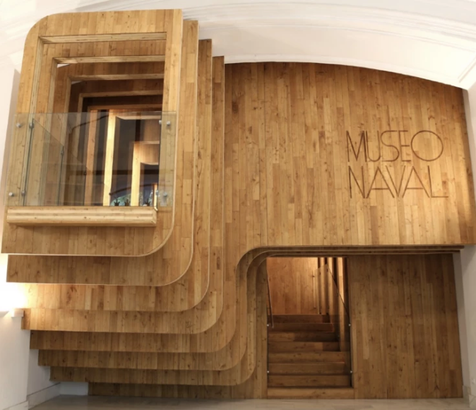

El Museo Naval de Madrid
El Museo Naval de Madrid lleva más de 175 años abierto al público, después de estar durante dos años reformando sus instalaciones, reabrió sus puertas en 2020. Además de su exposición permanente, en ocasiones también se realizan exposiciones temporales de gran interés.
Comparte sede con el Cuartel General de la Armada Española y de él dependen otros seis museos que están afiliados a él: el Museo Marítimo de la Torre del Oro (Sevilla), el Archivo Museo Don Álvaro de Bazán de Viso del Marqués (Ciudad Real), el Museo Naval de Cartagena (Murcia), el Museo Naval de Ferrol (A Coruña), el Museo Naval de Las Palmas (Gran Canaria) y el Museo Naval de San Fernando (Cádiz).
La idea de crear un Museo Naval en Madrid se remonta al año 1842, después de que se fundara un museo de Marina en la Población de San Carlos (Cádiz), y fue en noviembre de 1843, en nombre de la reina Isabel II, cuando se inauguró el museo en el Palacio de los Consejos de la calle Mayor.
El museo ha recorrido diferentes sedes hasta llegar a su ubicación actual, en el Cuartel General de la Armada, y también distintas remodelaciones a lo largo de los años, la última sería en el año 2018. Una de las principales novedades de ésta fue la modificación de la entrada, ya que resultaba obsoleta y no funcionaba correctamente, la actual entrada se encuentra en Paseo del Prado, nº 3. También destaca la
apertura de nuevos espacios como el área de acogida y la tienda, que mejoran la experiencia del visitante.
